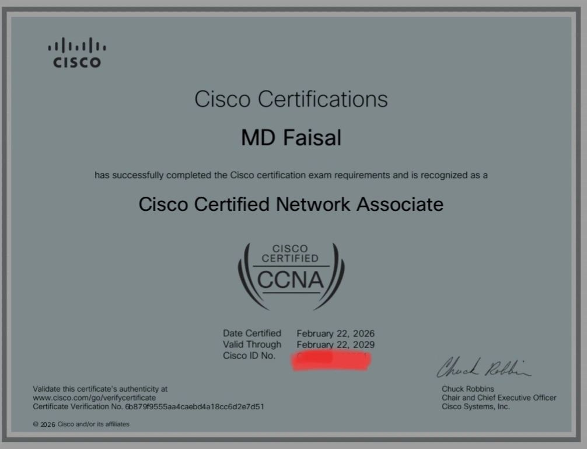
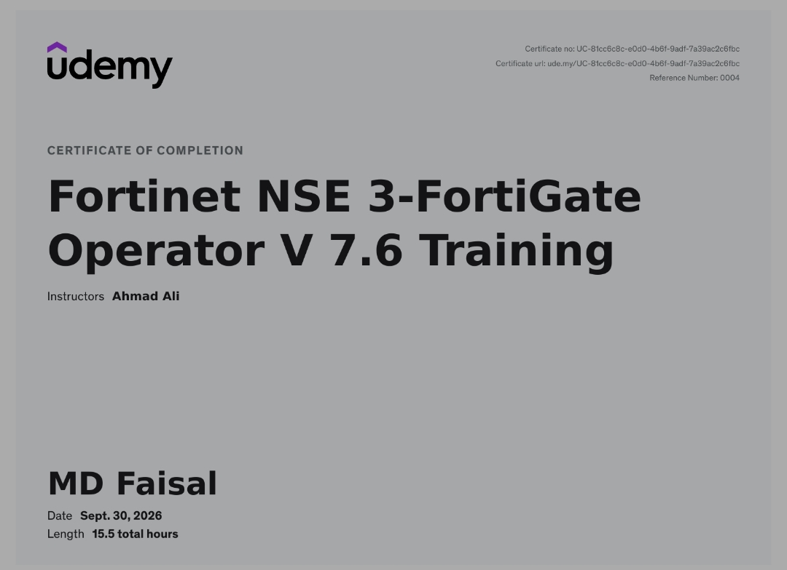
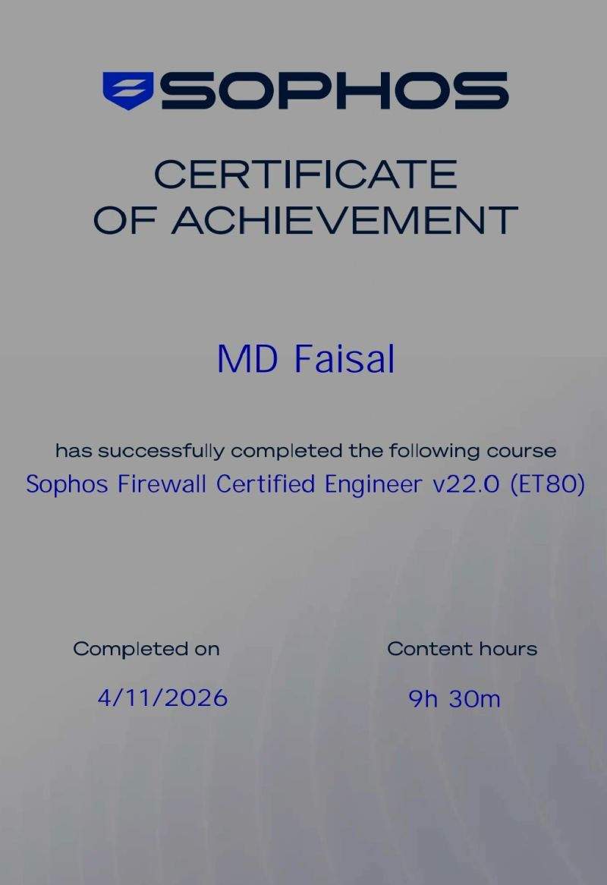
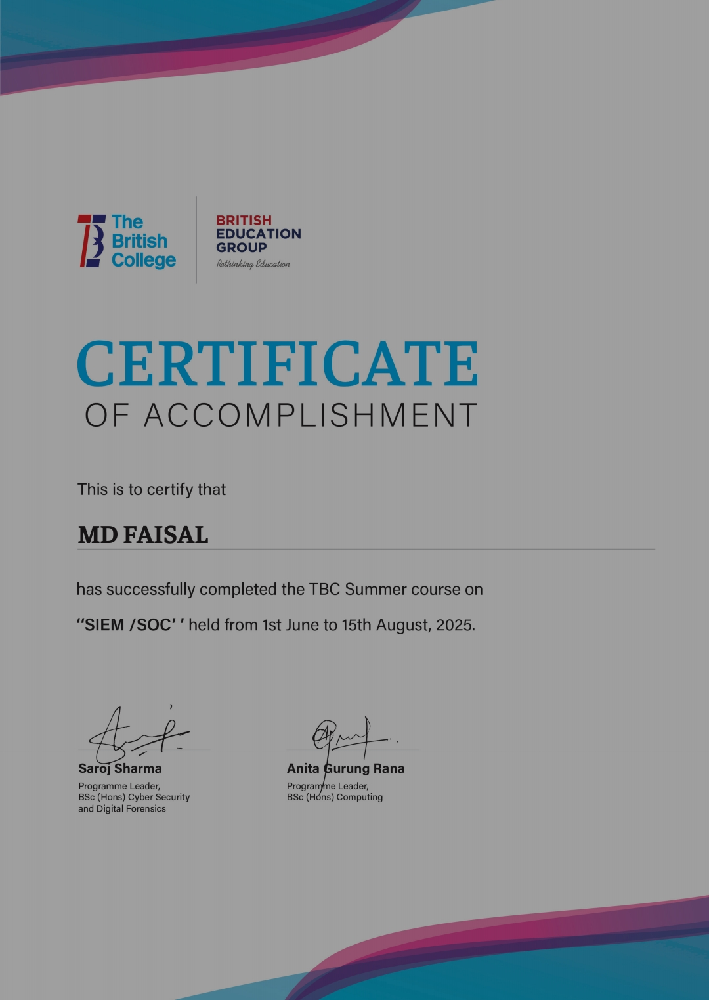
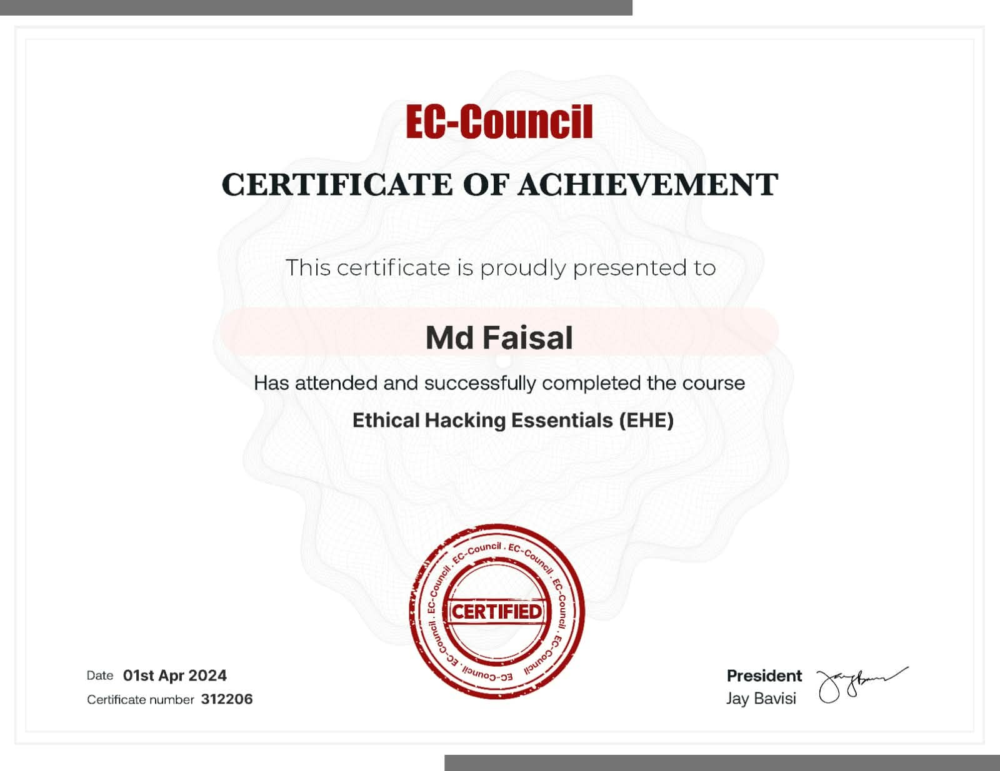
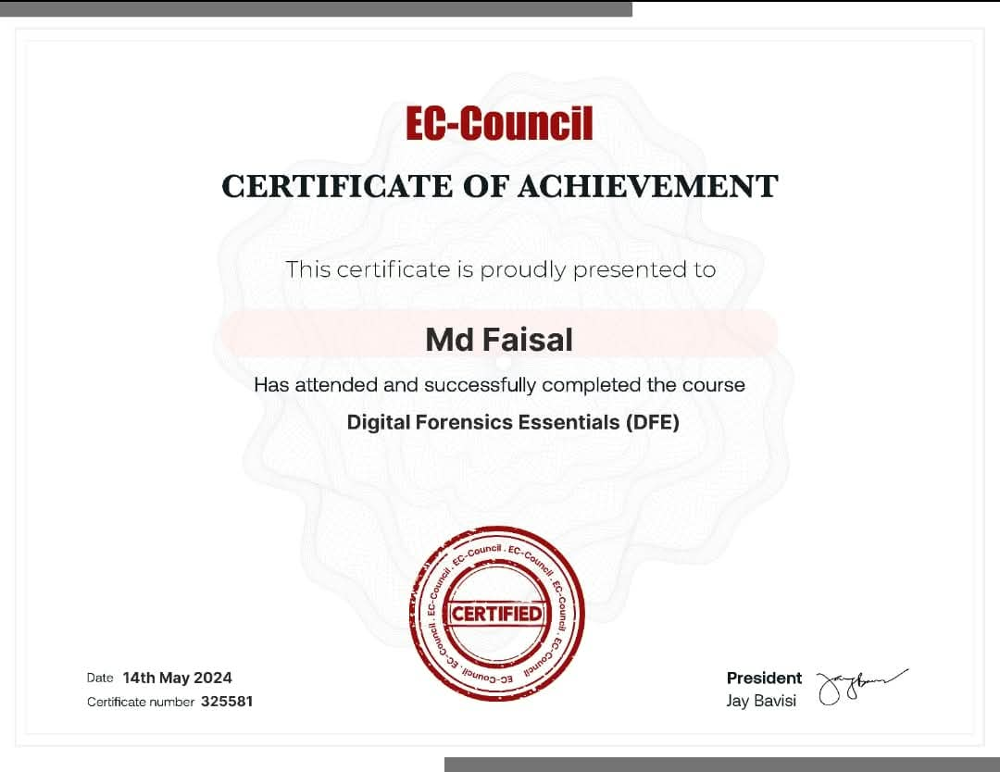

Securing networks, engineering reliability.
I am MD Faisal, a BSc (Hons) Cybersecurity & Digital Forensics student with hands-on knowledge of network infrastructure, routing and switching, and network security. Practical skills in troubleshooting connectivity issues and working with routers, switches, wireless access points, and Sophos and Fortinet firewall technologies. CCNA Certified and currently studying CCNP ENCOR & ENARSI.
Technical Skills
Structured technical domains based on practical experience across enterprise networks, firewall configurations, security operations, and digital forensics.
Networking & Infrastructure
Enterprise Networks
Network Security
Security Operations
Digital Forensics
Certifications & Development
Official industry certifications, ongoing core enterprise qualifications, and specialized cybersecurity credentials with certificate photo previews and upload options.
CCNA
Cisco Certified Network Associate credential validating routing, switching, IP services, and network fundamentals.

CCNP ENCOR
Implementing and Operating Cisco Enterprise Network Core Technologies. In active preparation for the core enterprise exam.
CCNP ENARSI
Implementing Cisco Enterprise Advanced Routing and Services (300-410). In active preparation for advanced enterprise routing and services.
Fortinet NSE 3
Fortinet Network Security Expert certification covering Fortinet threat landscapes and firewall cybersecurity ecosystem.

Sophos Firewall Engineer
Sophos Certified Engineer Certification validating advanced firewall architecture, deployment, and security policies.

SIEM/SOC Fundamentals
Foundations of Security Operations Centers, real-time threat monitoring, security information event management, and log triage.

Ethical Hacking Essentials
Essential ethical hacking principles, threat identification, vulnerability assessment, and defense countermeasures.

Digital Forensics Essentials
Core methodologies of digital forensics investigation, chain of custody, evidence acquisition, and artifact recovery.

Projects & Labs
Real-world simulation environments, security monitoring exercises, and digital forensic examinations.
Network Simulation Project
Designed and tested routing and switching scenarios using network simulation tools. Implemented enterprise topologies with VLAN segmentation, STP, EtherChannel, and dynamic routing.
CyberSecurity Projects
Practised security monitoring, log analysis, and alert investigation using SIEM tools. Simulated incident response workflows to detect, isolate, and investigate anomalous network traffic.
Forensics Projects
Conducted evidence examination using Autopsy and FTK Imager. Extracted deleted artifacts, performed file carving, maintained chain of custody, and compiled forensic investigative reports.
Education & Background
Academic degree, core languages, and technical qualification highlights.
BSc (Hons) Cybersecurity & Digital Forensics
Rigorous academic program covering network infrastructure, routing and switching, network security architecture, ethical hacking, digital evidence handling, and incident response. Building deep capabilities in secure network operations and cyber investigations.
CCNA
Cisco Certified
CCNP
ENCOR & ENARSI
NSE 3
Fortinet Certified
Sophos
Certified Engineer
Languages
Effective multilingual communication for collaborative enterprise and technical environments.
Professional Scope
Aiming to engineer secure, resilient enterprise network infrastructures, apply proactive SIEM/SOC event monitoring, configure next-generation firewalls, and perform meticulous digital forensic examinations.
Get In Touch
Let's collaborate on networks & security
Open for network operations roles, security analyst opportunities, graduate positions, or collaborative projects.
Certificate
Credential Issuer
No certificate photo uploaded yet.
Click "Upload / Replace Photo" below to choose a certificate photo from your computer.certs/ccna.jpg.